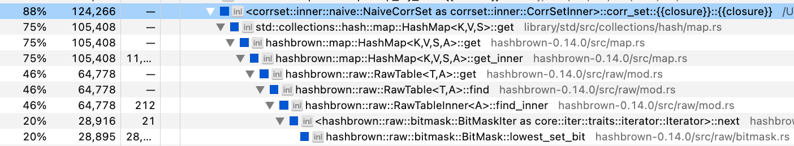
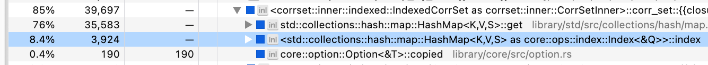
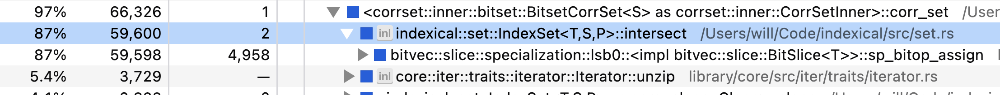

This note documents one of my recent adventures in performance optimization with Rust. By following along, hopefully you’ll learn something about how to write fast Rust.
Here’s the context: imagine you have data from an online exam where a set of users answered a set of questions. The raw data looks like this:
[
{
"user": "5ea2c2e3-4dc8-4a5a-93ec-18d3d9197374",
"question": "7d42b17d-77ff-4e0a-9a4d-354ddd7bbc57",
"score": 1
},
{
"user": "b7746016-fdbf-4f8a-9f84-05fde7b9c07a",
"question": "7d42b17d-77ff-4e0a-9a4d-354ddd7bbc57",
"score": 0
},
/* ... more data ... */
]Note that each user only answered a subset of all possible questions, and all scores are either 0 or 1.
Here’s the problem: given a size , which set of questions has the highest correlation with overall performance? We’ll call this the k-CorrSet problem. A simple brute-force algorithm for solving the k-CorrSet problem looks like this pseudocode:
func k_corrset($data, $k):
$all_qs = all questions in $data
for all $k-sized subsets $qs within $all_qs:
$us = all users that answered every question in $qs
$qs_totals = the total score on $qs of each user in $us
$grand_totals = the grand score on $all_qs of each user in $us
$r = correlation($qs_totals, $grand_totals)
return $qs with maximum $r We are going to implement several variations on this algorithm to see how fast we can make it.
When I do data analysis, I usually start with Python and then transition to Rust when I need better speed or memory consumption. So as a baseline, let’s look at a straightforward Pandas program for solving k-CorrSet:
from itertools import combinations
import pandas as pd
from pandas import IndexSlice as islice
def k_corrset(data, K):
all_qs = data.question.unique()
q_to_score = data.set_index(['question', 'user'])
all_grand_totals = data.groupby('user').score.sum().rename('grand_total')
corrs = []
for qs in combinations(all_qs, K):
qs_data = q_to_score.loc[islice[qs,:],:].swaplevel()
answered_all = qs_data.groupby(level=[0]).size() == K
answered_all = answered_all[answered_all].index
qs_totals = qs_data.loc[islice[answered_all,:]] \
.groupby(level=[0]).sum().rename(columns={'score': 'qs'})
r = qs_totals.join(all_grand_totals).corr().qs.grand_total
corrs.append({'qs': qs, 'r': r})
corrs = pd.DataFrame(corrs)
return corrs.sort_values('r', ascending=False).iloc[0].qs
data = pd.read_json('scores.json')
print(k_corrset(data, K=5))This uses a bit of MultiIndex magic, but don’t sweat the details. Let’s start benchmarking. First, we need data. To make the benchmark realistic, I generated synthetic data that roughly matches the properties of my actual data. The properties of the synthetic data are:
Our goal will be to compute k-CorrSet on this dataset for k = 5 in a reasonable amount of time on my 2021 M1 Macbook Pro. Note that there are = 2.5 billion combinations of questions, so we need the inner loop of the brute-force algorithm to be quite fast.
Using Python’s time.time()
function, I computed the speed of the inner loop for 1,000 iterations
running with CPython 3.9.17. The average execution time was 36
milliseconds. Not too bad, but at this rate, the full
computation would complete in 2.9 years. Let’s make
that faster!
Note: there are lots of ways we could make the Python code faster, but the point of this post isn’t to compare highly-optimized Python to highly-optimized Rust. The point is to compare “standard-Jupyter-notebook” Python to highly-optimized Rust.
We can start optimizing by reimplementing the Python code into a
roughly equivalent Rust program, expecting some free speedups from
Rust’s compiler optimizations. For readability, all the code below is a
simplification of the actual benchmark. For instance, I will omit
#[derive]s on types, and I will coalesce disparate blocks
of code into straight-line functions. You can see the full benchmark
here: https://github.com/willcrichton/corrset-benchmark
First, we translate the data types:
pub struct User(pub String);
pub struct Question(pub String);
pub struct Row {
pub user: User,
pub question: Question,
pub score: u32,
}We make User and Question into newtypes
both for clarity and so we can implement traits on them. Then, the basic
k-CorrSet algorithm is implemented as follows:
fn k_corrset(data: &[Row], k: usize) -> Vec<&Question> {
// utils::group_by(impl Iterator<Item = (K1, K2, V)>)
// -> HashMap<K1, HashMap<K2, V>>;
let q_to_score: HashMap<&Question, HashMap<&User, u32>> =
utils::group_by(data.iter().map(|r| (&r.question, &r.user, r.score)));
let u_to_score: HashMap<&User, HashMap<&Question, u32>> =
utils::group_by(data.iter().map(|r| (&r.user, &r.question, r.score)));
let all_grand_totals: HashMap<&User, u32> =
u_to_score.iter().map(|(user, scores)| {
let total = scores.values().sum::<u32>();
(*user, total)
})
.collect();
let all_qs = q_to_score.keys().copied();
all_qs.combinations(k)
.filter_map(|qs: Vec<&Question>| {
let (qs_totals, grand_totals): (Vec<_>, Vec<_>) = all_grand_totals.iter()
.filter_map(|(u, grand_total)| {
let q_total = qs.iter()
.map(|q| q_to_score[*q].get(u).copied())
.sum::<Option<u32>>()?;
Some((q_total as f64, *grand_total as f64))
})
.unzip();
// utils::correlation(&[f64], &[f64]) -> f64;
let r = utils::correlation(&qs_totals, &grand_totals);
(!r.is_nan()).then_some((qs, r))
})
.max_by_key(|(_, r)| FloatOrd(*r))
.unwrap().0
}The key elements to understand:
utils::group_by helper. (Note that
everywhere we refer to HashMap is actually an alias for fxhash::FxHashMap,
which is just std::collections::HashMap
with a more efficient hashing algorithm.)Itertools::combinations
method.all_grand_totals.iter().q_to_score[*q].get(u).copied() has type
Option<u32>, which is Some(n) if the
user has a score for q, and None
otherwise..sum::<Option<u32>>()
returns Some(total) if the user answered every question in
qs, and None otherwise.utils::correlation that
implements a standard calculation for Pearson’s
.max_by_key to get the questions with the highest
correlation. We use FloatOrd
so we can compare floats.So how’s the performance? I used Criterion
to benchmark the performance of the inner loop (the
filter_map) with Criterion’s default settings, using the
same dataset as before. The new inner loop runs in 4.2
milliseconds, which is about 8 times faster than the Python
baseline! But our full computation is still 124 days, which is too long.
Now let’s start really optimizing.
Rather than guess how to optimize the code, let’s run a profiler to see where the bottleneck is. On my Mac, I usually use Instruments.app, but recently I tried samply and wow! It’s much nicer to use. Samply seems to work better with Rust both in terms of symbol demangling and in terms of reconstructing the call stack. Here’s a screenshot of the relevant part of the samply trace for the Rust implementation so far:

We’re spending 75% of our time in HashMap::get! This is
the offending line of code:
q_to_score[*q].get(u).copied()The problem is that we’re hashing and comparing 36-byte UUID strings, which is expensive. We need a smaller type that can stand-in for the question/user strings.
The solution is that we will collect all the questions and users into
a Vec, and represent each question/user by their index in
that Vec. We could just use usize indices with
the Vec type, but a better practice is to use newtypes to
represent each kind of index. In fact, this problem comes up so often in
my work that I’ve already made a crate for it, Indexical
(which builds on the index_vec
crate). We define those index types like this:
pub struct QuestionRef<'a>(pub &'a Question);
pub struct UserRef<'a>(pub &'a User);
define_index_type! {
pub struct QuestionIdx for QuestionRef<'a> = u16;
}
define_index_type! {
pub struct UserIdx for UserRef<'a> = u32;
}The QuestionRef and UserRef types are
newtypes that enable us to implement traits on
&Question and &User. The
define_index_type macro creates new index types
QuestionIdx and UserIdx which are associated
with QuestionRef and UserRef. Those indices
are represented as u16 and a u32,
respectively.
Finally we update k_corrset to generate an IndexedDomain
for questions and users, and then use the QuestionIdx and
UserIdx types throughout the rest of the code:
fn k_corrset(data: &[Row], k: usize) -> Vec<&Question> {
// first, we create an `IndexedDomain` for questions and users
let (questions_set, users_set): (HashSet<_>, HashSet<_>) = data.iter()
.map(|row| (QuestionRef(&row.question), UserRef(&row.user)))
.unzip();
let questions = IndexedDomain::from_iter(questions_set);
let users = IndexedDomain::from_iter(users_set);
// then we create the same data structures as before,
// except using `IndexedDomain::index` to lookup indices.
// note the change in the HashMap key types
let q_to_score: HashMap<QuestionIdx, HashMap<UserIdx, u32>> =
utils::group_by(data.iter().map(|r| (
questions.index(&(QuestionRef(&r.question))),
users.index(&(UserRef(&r.user))),
r.score,
)));
let u_to_score: HashMap<UserIdx, HashMap<QuestionIdx, u32>> =
utils::group_by(data.iter().map(|r| (
users.index(&(UserRef(&r.user))),
questions.index(&(QuestionRef(&r.question))),
r.score,
)));
let all_grand_totals = // same code
let all_qs = questions.indices();
all_qs.combinations(k)
.filter_map(|qs: Vec<QuestionIdx>| {
// same code
})
.max_by_key(|(_, r)| FloatOrd(*r))
.unwrap().0
// we have to post-process the indices back to values
.into_iter().map(|idx| questions.value(idx).0).collect()
}Again, check out the GitHub for the complete implementation, and check out the indexical docs for details on its API.
Once again we run our benchmark on the inner loop of the computation. The new inner loop runs in 1.0 milliseconds, which is 4 times faster than our last iteration, and 35 times faster than our Python baseline. We’re down to 30 days for the total computation — let’s keep going!
Let’s profile again:

Blast, still spending most our time in HashMap::get.
Well, what if we got rid of hash maps altogether? A
HashMap<&User, u32> is conceptually the same
thing as a Vec<Option<u32>> where each
&User has a unique index. For example, in a domain of
users ["a", "b", "c"], then the hash map
{"b" => 1} is equivalent to the vector
[None, Some(1), None]. This vector costs more memory
(paying for the None spaces), but it improves the
performance of key/value lookups (avoids hashing).
We’re trying to fully optimize for performance, and given the scale
of our dataset, we can afford to make the compute/memory trade-off. We
will use Indexical which provides a DenseIndexMap<K, V>
type that is internally implemented as a Vec<V> type
indexed by K::Index.
The main change to the k_corrset function is that we
convert all our auxiliary data structures to dense index maps:
pub type QuestionMap<'a, T> = DenseIndexMap<'a, QuestionRef<'a>, T>;
pub type UserMap<'a, T> = DenseIndexMap<'a, UserRef<'a>, T>;
fn k_corrset(data: &[Row], k: usize) -> Vec<&Question> {
// build the `users` and `questions` domains same as before
// Initialize q_to_score to an empty dense map
let mut q_to_score: QuestionMap<'_, UserMap<'_, Option<u32>>> =
QuestionMap::new(&questions, |_| UserMap::new(&users, |_| None));
// Fill in q_to_score with the dataset
for r in data {
q_to_score
.get_mut(&QuestionRef(&r.question))
.unwrap()
.insert(UserRef(&r.user), Some(r.score));
}
let grand_totals = UserMap::new(&users, |u| {
q_to_score.values().filter_map(|v| v[u]).sum::<u32>()
});
let all_qs = questions.indices();
all_qs.combinations(k)
// almost the same code, see below
}The only change to the inner loop is that our code which used to say this:
q_to_score[*q].get(u).copied()Is now this:
q_to_score[*q][u]Running the benchmark again, the new inner loop runs in 181 microseconds, which is 6 times faster than our last iteration, and 199 times faster than our Python baseline. We’re down to 5.3 days for the total computation.
Another small performance hit comes every time we use the brackets
[] to index into an DenseIndexMap. The vector
beneath will run a bounds-check for safety, but our code is guaranteed
to never exceed vector bounds as written. I couldn’t actually find the
bounds check in the samply profile, but it does make a noticeable
difference in the benchmark, so it’s worth implementing.
Before our inner loop looked like this:
let q_total = qs.iter()
.map(|q| q_to_score[*q][u])
.sum::<Option<u32>>()?;
let grand_total = all_grand_totals[u];Removing bounds checks with get_unchecked, our new inner
loop looks like this:
let q_total = qs.iter()
.map(|q| unsafe {
let u_scores = q_to_score.get_unchecked(q);
*u_scores.get_unchecked(u)
})
.sum::<Option<u32>>()?;
let grand_total = unsafe { *all_grand_totals.get_unchecked(u) };It is unsafe without bounds-checks, so we have to mark these blocks
as unsafe.
Running the benchmark again, the new inner loop runs in 156 microseconds, which is 1.16x faster than our last iteration, and 229 times faster than our Python baseline. We’re down to 4.6 days for the total computation.
We’re currently at a 225x speedup, which means we still have three orders of magnitude left to go. To get there, we need to rethink the computational structure of the inner loop. Right now, our loop effectively looks like:
for each subset of questions $qs:
for each user $u:
for each question $q in $qs:
if $u answered $q: add $u's score on $q to a running total
else: skip to the next user
$r = correlation($u's totals on $qs, $u's grand total)An important aspect of our data is that it forms a sparse matrix. For a given question, only 20% of users have answered that question. For a set of 5 questions, a much smaller fraction have answered all 5 questions. So if we can efficiently determine first which users have answered all 5 questions, then our subsequent loop will run for fewer iterations (and be free of branches). Something like this:
for each subset of questions $qs:
$qs_u = all users who have answered every question in $qs
for each user $u in $qs_u:
for each question $q in $qs:
add $u's score on $q to a running total
$r = correlation($u's scores on $qs, $u's grand total)So how do we represent the set of users who have answered a given
question? We could use a HashSet,
but we saw earlier that hashing is computationally expensive. Because
our data is indexed, we can use a more efficient data structure: the bit-set, which uses
the individual bits of memory to represent whether an object is present
or absent in a set. Indexical provides another abstraction for
integratings bit-sets with our newtype indices: the IndexSet.
Previously, our q_to_score data structure mapped from
questions to a user-indexed vector of optional scores (that is,
UserMap<'_, Option<u32>>). Now we will change
Option<u32> to u32 and add a bit-set
describing the set of users who answered a given question. The first
half of the updated code looks like this:
type UserSet<'a> = IndexSet<'a, UserRef<'a>>;
let mut q_to_score: QuestionMap<'_, (UserSet<'_>, UserMap<'_, u32>)> =
QuestionMap::new(&questions, |_| (
UserMap::<'_, u32>::new(&users, |_| 0),
UserSet::new(&users),
));
for r in data {
let (scores, set) = &mut q_to_score.get_mut(&QuestionRef(&r.question)).unwrap();
scores.insert(UserRef(&r.user), r.score);
set.insert(UserRef(&r.user));
}Note that q_to_score now effectively has invalid values,
since we provide a default value of 0 for users who did not answer a
question. We have to be careful not to use these invalid values in the
computation.
Then we update our inner loop to match the new pseudocode:
let all_qs = questions.indices();
all_qs.combinations(k)
.filter_map(|qs: Vec<QuestionIdx>| {
// Compute the intersection of the user-sets for each question
let mut users = q_to_score[qs[0]].1.clone();
for q in &qs[1..] {
users.intersect(&q_to_score[*q].1);
}
let (qs_totals, grand_totals): (Vec<_>, Vec<_>) = users.indices()
// only .map, not .filter_map as before
.map(|u| {
let q_total = qs.iter()
.map(|q| unsafe {
let (u_scores, _) = q_to_score.get_unchecked(q);
*u_scores.get_unchecked(u)
})
// only u32, not Option<u32> as before
.sum::<u32>();
let grand_total = unsafe { *all_grand_totals.get_unchecked(u) };
(q_total as f64, grand_total as f64)
})
.unzip();
let r = utils::correlation(&qs_totals, &grand_totals);
(!r.is_nan()).then_some((qs, r))
})
// rest of the code is the sameRunning the benchmark again, the new inner loop runs in 47 microseconds, which is 3.4 times faster than our last iteration, and 769 times faster than our Python baseline. We’re down to 1.4 days for the total computation.
Our new computational structure is definitely helping, but it’s still not fast enough. Let’s check back in with samply:

Now we’re spending all our time in the bit-set intersection! That means we need to dig in to how the bit-set is implemented. The default bit-set library used by Indexical is bitvec. As of 2023, the implementation of intersection within bitvec’s bit-set is roughly this code:
fn intersect(dst: &mut BitSet, src: &BitSet) {
for (n1, n2): (&mut u64, &u64) in dst.iter_mut().zip(&src) {
*n1 &= *n2;
}
}So bitvec is AND-ing a u64 at a time. But it turns out
most processors have instructions specifically for doing
bit-manipulation on multiple u64s at a time, called SIMD
(single instruction, multiple data). Thankfully, Rust provides an
experimental SIMD API std::simd
that we can use. Roughly speaking, the SIMD version of bit-set
intersection looks like this:
fn intersect(dst: &mut SimdBitSet, src: &SimdBitSet) {
for (n1, n2): (&mut u64x4, &u64x4) in dst.iter_mut().zip(&src) {
*n1 &= *n2;
}
}The only difference is that we’ve replaced our primitive
u64 type with a SIMD type u64x4,
and under the hood, Rust emits a single SIMD instruction to perform the
&= operation that ANDs four u64s at a
time.
Where can we find a SIMD-accelerated bitset? bitvec doesn’t support SIMD. There are a few on crates.io, and I tried out one called bitsvec. It works well for fast intersection, but I found that its iterator which finds the indices of the 1-bits is actually quite slow. So I copied large portions of the bitsvec implementation and wrote a more efficient iterator, which you can check out in the Indexical source if you’re curious.
Thanks to Indexical’s abstractions, swapping in the SIMD bitset only
requires changing a type alias and no other modifications to the
k_corrset function. I experimented with different lane
sizes and found u64x16 is the most efficient on my machine
for this dataset.
Once more we run the benchmark, and the new inner loop runs in 1.35 microseconds, which is 34 times faster than our last iteration, and 26,459 times faster than our Python baseline. We’re down to 57 minutes for the total computation.
At this point, we’re pretty close to peak performance. (You may not like it, but…) Let’s go back to the profile, this time looking at the inverted view (which shows the most-called functions at the leaves of the call tree):
The biggest bottleneck is our bit-set iterator! I wasn’t joking! But
we see several concerning functions: memmove,
realloc, allocate — that’s right, we’re
allocating memory in the inner loop of this function. Specifically,
there’s the user bit-set that we initially clone, and there’s the two
vectors for qs_totals and grand_totals that we
allocate with unzip.
To avoid allocation, we create these data structures up front with the maximum possible size needed, and then repeatedly write into them:
// Allocate our data up front
let mut qs_totals = vec![0.; users.len()]
let mut grand_totals = vec![0.; users.len()];
let mut user_set = IndexSet::new(&users);
let all_qs = questions.indices();
all_qs.combinations(k)
.filter_map(|qs| {
// Use `clone_from` rather than `clone` to copy without allocation
user_set.clone_from(&q_to_score[qs[0]].1);
for q in &qs[1..] {
user_set.intersect(&q_to_score[*q].1);
}
let mut n = 0;
for (i, u) in user_set.indices().enumerate() {
let q_total = qs.iter()
.map(|q| unsafe {
let (u_scores, _) = q_to_score.get_unchecked(q);
*u_scores..get_unchecked(u)
})
.sum::<u32>();
let grand_total = unsafe { *all_grand_totals.get_unchecked(u) };
// Update totals/grand_totals in-place rather than pushing into a vector
unsafe {
*qs_totals.get_unchecked_mut(i) = q_total as f64;
*grand_totals.get_unchecked_mut(i) = grand_total as f64;
}
n += 1;
}
// Only pass in the first `n` elements!
let r = utils::correlation(&qs_totals[..n], &grand_totals[..n]);
(!r.is_nan()).then_some((qs, r))
})We run the benchmark again, and the new inner loop runs in 1.09 microseconds, which is 1.24 times faster than our last iteration, and 32,940 times faster than our Python baseline. We’re down to 46 minutes for the total computation.
(As an aside, it’s impressive that the heap allocator was fast enough to have such a small impact on our runtime!)
In summary, Table 1 shows the runtime, relative speedup, absolute speedup, and total estimated completion time for each level of the benchmark.
| Level | Runtime | Speedup over previous level | Speedup over Python | Est. completion time |
|---|---|---|---|---|
| python | 35.85 ms | 1.00× | 2.88 years | |
| 0_basic | 4.24 ms | 8.46× | 8.46× | 124.40 days |
| 1_indexed | 1.03 ms | 4.11× | 34.78× | 30.25 days |
| 2_imap | 180.52 μs | 5.71× | 198.60× | 5.30 days |
| 3_bchecks | 156.23 μs | 1.16× | 229.47× | 4.59 days |
| 4_bitset | 46.60 μs | 3.35× | 769.26× | 1.37 days |
| 5_simd | 1.35 μs | 34.40× | 26,459.54× | 57.26 min |
| 6_alloc | 1.09 μs | 1.24× | 32,940.02× | 45.99 min |
The absolute speedup is summarized in Figure 1. Note that the y-axis is on a log-scale!
At this point, we seem to have totally exhausted our avenues for optimization. I actually can’t think of any other ways to make the inner loop substantively faster — let me know if you have any ideas. But we’ve left out one final, obvious trick: parallelism! This problem is embarassingly parallel, so we can trivially parallelize the inner loop over multiple cores. Rayon makes this a breeze:
let all_qs = questions.indices();
all_qs.combinations(k)
.par_bridge()
.map_init(
|| (vec![0.; users.len()], vec![0.; users.len()], IndexSet::new(&users)),
|(qs_totals, grand_totals, user_set), qs| {
// same code as before
})
// same code as beforeThe par_bridge method takes a serial iterator and
converts it into a parallel iterator. The map_init function
is a parallel map with thread-specific state, so we preserve our
allocation-free status.
We need a different benchmark to evaluate the outer loop. I used Criterion to run the outer loop over 5,000,000 question combinations in a single run with a given strategy. This is enough executions to reveal differences in each outer loop without waiting weeks for the benchmark to complete.
Running this benchmark with the serial strategy over the fastest inner loop takes 6.8 seconds. My Macbook Pro has 10 cores, so with Rayon we should expect to see close to a 10x speedup. After benchmarking the parallel strategy, we get… 4.2 seconds to complete 5,000,000 combinations. That’s only a 1.6x speedup! Shameful!
Let’s go back to the profile to investigate our lack of scaling:

Our threads are spending most of their time locking and unlocking a
mutex! There’s some kind of synchronization bottleneck. Indeed, if we
read the par_bridge
documentation carefully, we’ll find a key sentence:
Iterator items are pulled by
next()one at a time, synchronized from each thread that is ready for work, so this may become a bottleneck if the serial iterator can’t keep up with the parallel demand.
It seems that the hand-off between the
Itertools::combinations iterator and the Rayon parallel
bridge is too slow. Given that we have a huge number of combinations, a
simple way to avoid this bottleneck is to increase the granularity of
task assignment. That is, we can batch together many question
combinations and pass them off to a thread all at once.
For this task, I defined a quick-and-dirty batching iterator that
uses an ArrayVec
to avoid allocation.
pub struct Batched<const N: usize, I: Iterator> {
iter: I,
}
impl<const N: usize, I: Iterator> Iterator for Batched<N, I> {
type Item = ArrayVec<I::Item, N>;
#[inline]
fn next(&mut self) -> Option<Self::Item> {
let batch = ArrayVec::from_iter((&mut self.iter).take(N));
(!batch.is_empty()).then_some(batch)
}
}Then we modify our outer loop by batching the combinations iterator, and modify the inner loop to flatten each batch:
let all_qs = questions.indices();
all_qs.combinations(k)
.batched::<1024>()
.par_bridge()
.map_init(
|| (vec![0.; users.len()], vec![0.; users.len()], IndexSet::new(&users)),
|(qs_totals, grand_totals, user_set), qs_batch| {
qs_batch
.into_iter()
.filter_map(|qs| {
// same code as before
})
.collect_vec()
})
.flatten()
// same code as beforeRunning the outer-loop benchmark again, the chunking iterator now completes 5,000,000 combinations in 982 milliseconds. This is a 6.9x speedup over the serial approach, which is much better for our 10-core machine. Ideally we would get closer to 10x, but I think this post is long enough. In summary, our outer loop runtime numbers are in Table 2.
| Level | Runtime | Speedup over previous level | Speedup over Python | Est. completion time |
|---|---|---|---|---|
| 0_serial | 6.80 s | 26,342.63× | 57.51 min | |
| 1_parallel | 4.22 s | 1.61× | 42,439.31× | 35.70 min |
| 2_batched | 982.46 ms | 4.30× | 182,450.94× | 8.30 min |
So how far did we come? The original Python program was going to take 2.9 years to complete at k=5. Our final Rust program only takes 8 minutes on the same dataset. That is roughly a 180,000x speedup. A summary of the key optimizations:
Can we do better? Let’s take one last look at the profile:

We’re spending 38% of our time in the bit-set iterator, and 36% of our time in the bit-set intersection. Another 12% in copying the initial bit-set for a given set of questions. And a long tail of other operations like computing the correlation.
I tried my best to make the SIMD bit-set implementation fast, so I
don’t know of a way to improve these numbers. We might find another +10%
speedup from careful tweaking of the various constants (lane size, batch
size, etc.), but I don’t think there’s another order of magnitude left
on the table. If you know of a way, I invite you to try it out:
https://github.com/willcrichton/corrset-benchmark
Also if you know of an analytic solution to this problem, i.e., a smarter way to get an optimal answer without brute force, do let me know as well! Otherwise, I hope you learned a bit about performance engineering in Rust.
This post generated a fair amount of engagement on /r/rust and HN. I wanted to share a few things people have tried.
python/ directory of the benchmark.python/ directory of the benchmark.[0, 1, 2, 3, 4] and [0, 1, 2, 3, 5], if we
store the bit-set representing the intersection of
[0, 1, 2, 3], then we can compute the bit-set for
5 and 6 with only one intersection rather than
five (or more generally, rather than
intersections). Put another way, if we fuse the combinations iterator
and the bit-set intersections, we can trade-off memory for performance.
I implemented cjcormier’s strategy in fused.rs
and it achieves a 1.28x speedup over my previous
personal record, reducing the total computation time of k=5 from 10.3
minutes to 8.0 minutes. Thanks Chris!